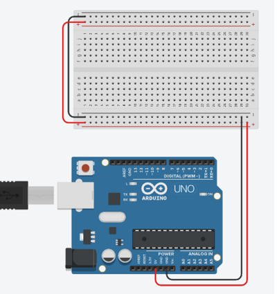
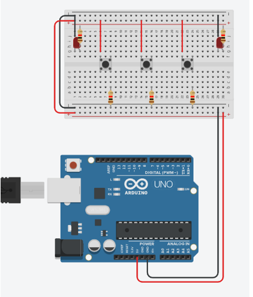
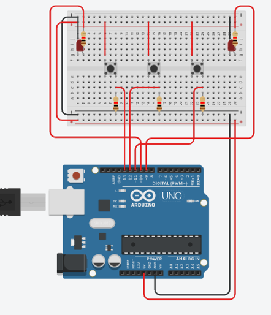
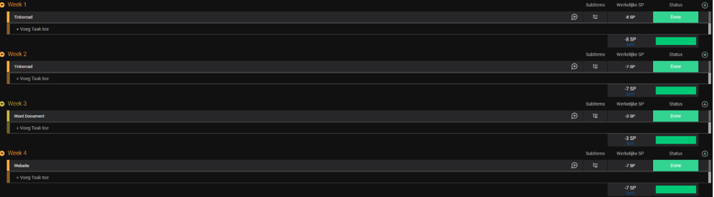

Inleiding
Ik had origineel een ander project voorbereid,
dit was een randomizer, Lennert Dubois vond dit
niet goed genoeg dus had hij me geholpen om een ander project te zoeken.
Daarna ben ik met het idee gekomen om een richting aanwijzer te maken voor
fietsers en dergelijke weg gebruikers. Dit project bevat enkele
knoppen om de leds te laten knipperen.
Stappenplan
Stap 1

Plaats de basis van je arduino project.
Dit bevat een arduino uno en een breadboard.
Verbind het breadboard met de arduino.
En verbind daarna de boven en onderkant van de arduino.
Plaats de basis van je arduino project.
Dit bevat een arduino uno en een breadboard.
Verbind het breadboard met de arduino.
En verbind daarna de boven en onderkant van de arduino.
Stap 2

Plaats de basis componenten om het breadboard.
Plaats 3 knoppen naast elkaar,
vervolgt met 1 transistor onder elke knop.
Plaats vervolgens aan de linker en rechter bovenhoek
een led met transistor.
Verbind vervolgens de kabels zoals op de foto.
Plaats de basis componenten om het breadboard.
Plaats 3 knoppen naast elkaar,
vervolgt met 1 transistor onder elke knop.
Plaats vervolgens aan de linker en rechter bovenhoek
een led met transistor.
Verbind vervolgens de kabels zoals op de foto.
Stap 3

De laatste stap voor de Arduino is om alles
te verbinden met de Arduino.
Doe alles precies zoals op de foto en je bent klaar.
De laatste stap voor de Arduino is om alles
te verbinden met de Arduino.
Doe alles precies zoals op de foto en je bent klaar.
Planning
Ik schat dat ik in totaal ongeveer 24u aan dit project zal werken.
De eerste 2 weken ga ik spenderen aan het project zelf op
Tinkercad ontwerpen, dit zal zeker 15u duren.
Daarna Ga ik zeker 2-3 uur aan mij word document werken zodat alles er in staat.
De resterende uren ga ik werken om alles op mijn website te krijgen.
Dit kan lang duren aangezien er best veel data op moet komen. 
Bronnen
Tinkercad Schema

Uitleg Code
In dit deel van de code maak ik alle variabelen.
const int buttonPin = 13;
const int buttonPin1 = 12;
const int buttonPin2 = 11;
int buttonStateKnopLinks = 0;
int buttonStateKnopMid = 0;
int buttonStateKnopRechts = 0;
int pink1 = 0;
int pink2 = 0;
int del = 500;
const int buttonPin1 = 12;
const int buttonPin2 = 11;
int buttonStateKnopLinks = 0;
int buttonStateKnopMid = 0;
int buttonStateKnopRechts = 0;
int pink1 = 0;
int pink2 = 0;
int del = 500;
In dit deel van de code zeg ik welke pin output en input is.
void setup()
{
pinMode(13, INPUT);
pinMode(12, INPUT);
pinMode(11, INPUT);
pinMode(10, OUTPUT);
pinMode(9, OUTPUT);
}
{
pinMode(13, INPUT);
pinMode(12, INPUT);
pinMode(11, INPUT);
pinMode(10, OUTPUT);
pinMode(9, OUTPUT);
}
In het laatste en grootste deel van de code,
zorg ik ervoor dat de variabelen worden ingelezen op de knoppen.
Daarna als 1 van de knoppen worden ingedrukt,
word de variabel pink op 1 gezet.
Als pink vervolgens 1 is gaat het lampje aan de juiste kant beginnen pinken.
Als de linker en rechter knop tegelijkertijd op 1 staan,
word de delay van het pinker 250ms i.p.v. 500ms.
Als de middelste knop vervolgens word ingedrukt,
worden de variabelen op 0 gezet, wat er voor zorgt dat de lampjes uit gaan.
void loop()
{
buttonStateKnopLinks = digitalRead(buttonPin);
buttonStateKnopMid = digitalRead(buttonPin1);
buttonStateKnopRechts = digitalRead(buttonPin2);
if (buttonStateKnopLinks == HIGH) {
pink1 = 1;
}
if (buttonStateKnopRechts == HIGH) {
pink2 = 1;
}
if (pink1 == 1) {
digitalWrite(10, HIGH);
delay(del);
digitalWrite(10, LOW);
delay(del);
}
if (pink2 == 1) {
digitalWrite(9, HIGH);
delay(del);
digitalWrite(9, LOW);
delay(del);
}
if (buttonStateKnopMid == HIGH) {
pink1 = 0;
pink2 = 0;
}
if (pink1 == 1) {
if (pink2 == 1) {
del = 250;
} else {
del = 500;
}
}
}
{
buttonStateKnopLinks = digitalRead(buttonPin);
buttonStateKnopMid = digitalRead(buttonPin1);
buttonStateKnopRechts = digitalRead(buttonPin2);
if (buttonStateKnopLinks == HIGH) {
pink1 = 1;
}
if (buttonStateKnopRechts == HIGH) {
pink2 = 1;
}
if (pink1 == 1) {
digitalWrite(10, HIGH);
delay(del);
digitalWrite(10, LOW);
delay(del);
}
if (pink2 == 1) {
digitalWrite(9, HIGH);
delay(del);
digitalWrite(9, LOW);
delay(del);
}
if (buttonStateKnopMid == HIGH) {
pink1 = 0;
pink2 = 0;
}
if (pink1 == 1) {
if (pink2 == 1) {
del = 250;
} else {
del = 500;
}
}
}
Voorstelling Van Project
https://youtu.be/LCem_x7_TmI
https://www.tinkercad.com/things/ipeoMuKws9B-fantabulous-lahdi-hillar/editel
Slot & Eigen Bevindingen
Dit is mijn project samengevat in 1 document.
Ik vond dit een redelijk leuk project om aan te werken
en om eens kennis te maken met Arduin uno.
Ik vind dat het project goed is gelukt,
alles verliep vlot en voor het meeste zonder problemen.
Ik heb ook ontdekt dat er voor alles een
oplossing is als je ver genoeg zoekt.
Eigen Evaluatie
Ik vind in totaal dat ik zeker een 7/10 verdien,
het project is allemaal in orde.
Het word document is ook volledig dus dit is wat ik vind.
Het enige dat beter zou kunnen is het idee. Ik ben ook veel tijd
verloren aan het zoeken van mijn project.
Maar jij vond het idee voldoende dus nam ik dat maar.